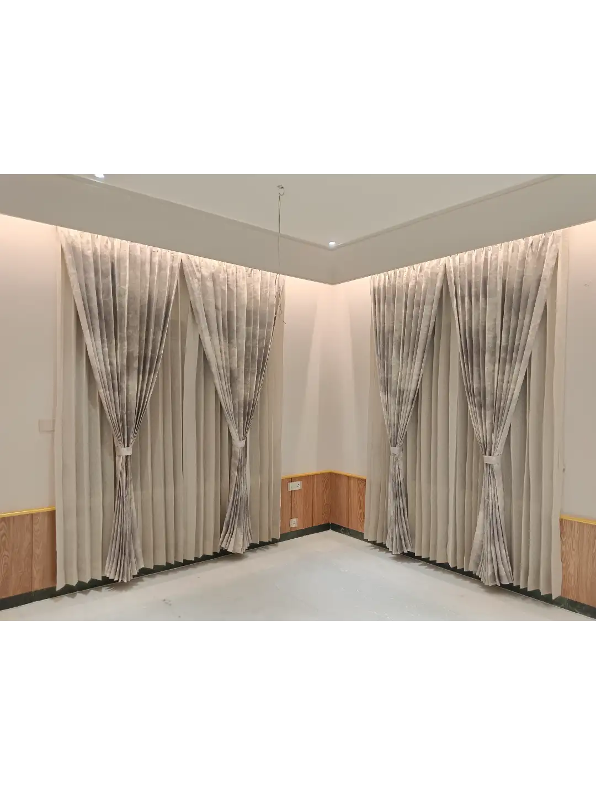
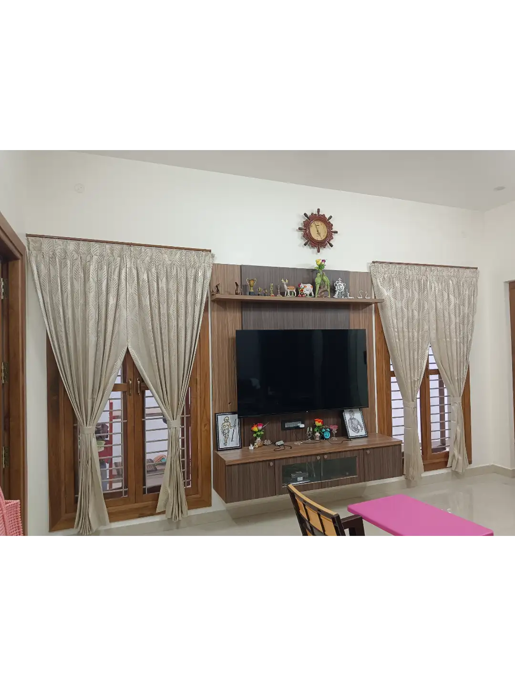
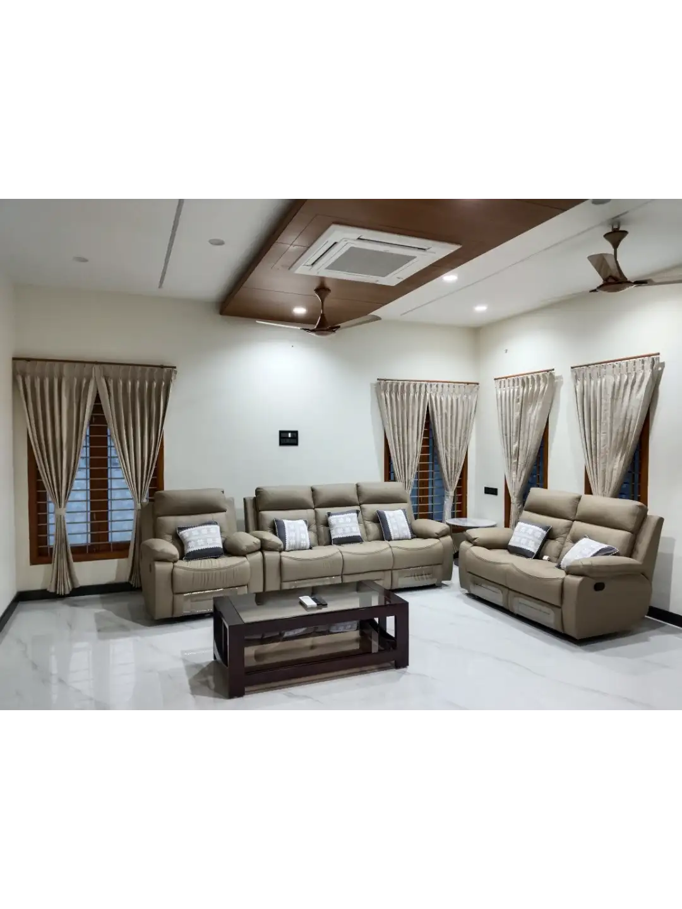
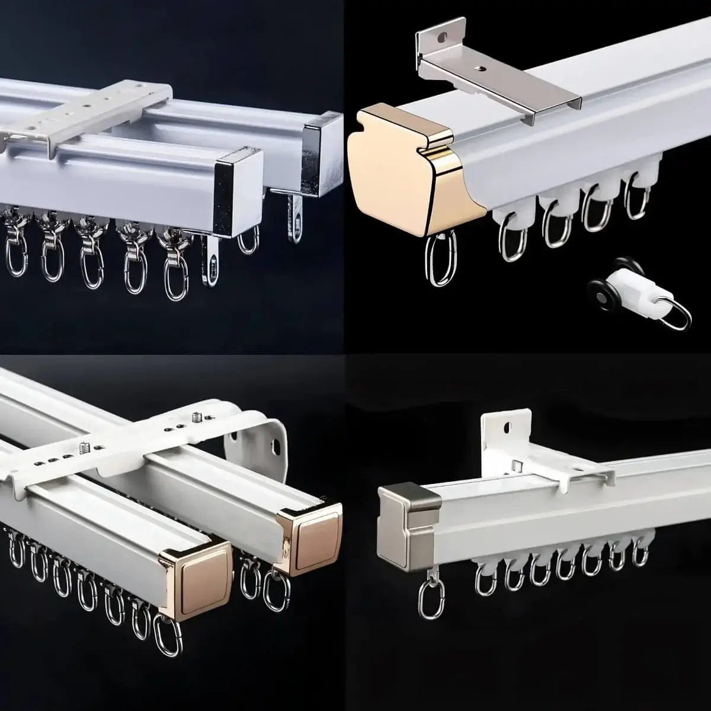

Sheer Curtains
Floaty, light-filtering layers that soften daylight while keeping rooms bright and airy — popular for living rooms and balconies across Karur.
Catchy Decors designs, measures and installs custom curtains for homes across Karur — from soft sheers and room-darkening blackout fabric to low-maintenance eyelet styles and motorized curtains. Every curtain is made to your exact window size and fitted by our own team.
Made to measure, expertly installed across Karur town and nearby areas.

Floaty, light-filtering layers that soften daylight while keeping rooms bright and airy — popular for living rooms and balconies across Karur.

Room-darkening fabric for peaceful sleep, ideal for bedrooms and home theatres. Also helps reduce outside heat and street noise.

Easy-glide, low-maintenance curtains with a clean, modern finish — a favourite for Karur homes wanting an everyday-practical look.

Tailored pleats and layered styling for a more formal, boutique-hotel feel in living and dining spaces.

Remote or app-controlled curtain tracks for a smart-home finish — open and close your drapes without leaving the sofa.

Curtain channels, rods and hardware fitted neatly for a complete, polished window finish.
Every curtain is measured on-site, not sold off a rack, so the fit and fall is correct the first time.
We help you pick weight, weave and colour based on light, privacy and how the room is used.
No third-party fitters — the same studio that designs your curtains also installs them.
Whether it's a single bedroom window or full-home curtains, we serve residential and commercial spaces in Karur. We visit your home for free measurement and design consultation, then handle fabrication and installation from our Karur studio — for Karur town, Thanthonimalai, Vengamedu, Vaiyapuri Nagar, Kamarajapuram, Andankoil, Aravakurichi, Kulithalai, Pugalur and Pallapatti.
What Karur homeowners ask us most
Yes. Every curtain at Catchy Decors is made to measure for your specific windows, with professional installation included.
We offer sheer, blackout, pleated, eyelet and designer fabrics from trusted brands including D'Decor and GM Enterprises, in a wide range of colours and textures.
Yes, we fit remote and app-controlled motorized curtain tracks for a smart-home finish.
Most homes are measured, fitted and installed within a few days of finalising your design.
Yes — we visit your home in Karur free of charge to measure windows and help you choose fabrics and styles.
Share your window sizes and we’ll suggest the right fabric, style and track.
Ask for a consultation →